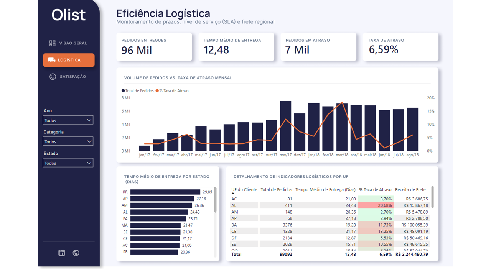

Projeto Olist
Dashboard de e-commerce com 99 mil pedidos, R$ 15,79 mi em faturamento e análises de logística e satisfação.
Analytics Engineering Em desenvolvimento
Evolução do projeto com transformações SQL em dbt, orquestração com Airflow e organização dos dados em camadas.
Tecnologias planejadas
- dbt
- Airflow
- Snowflake